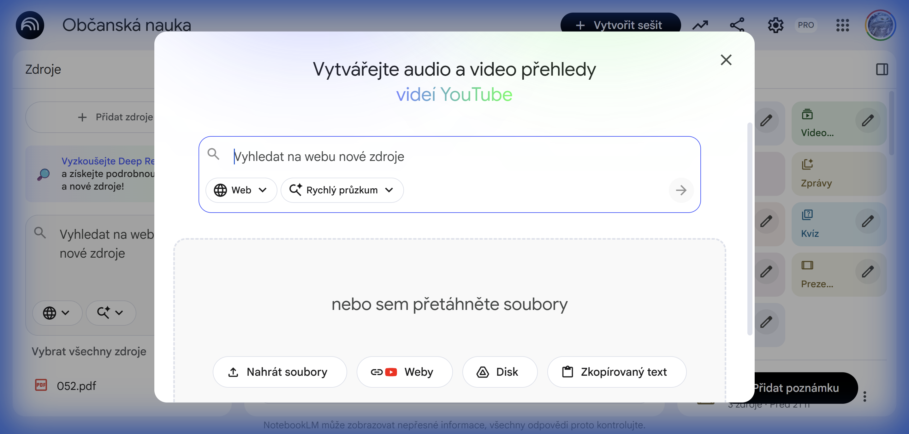
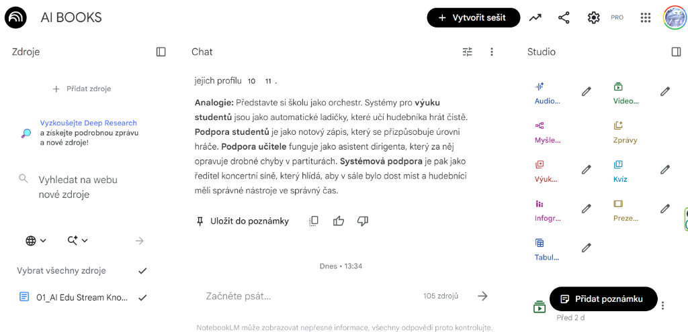

Než začnete kouzlit, musíme si připravit jeviště
NotebookLM není jako ChatGPT.
ChatGPT ví „všechno a nic". NotebookLM ví jen to, co mu dáte.
Představte si ho jako velmi chytrého asistenta, kterého zavřete do místnosti jen s učebnicí a poznámkami, které mu sami přinesete. On si je okamžitě přečte a pak plní vaše úkoly pouze na základě nich.
Zde je návod, jak na to – zvládnete to za 3 minuty.
Přihlášení
- Otevřete si v prohlížeči stránku: notebooklm.google.com
- Klikněte na tlačítko Try NotebookLM (Vyzkoušet)
- Přihlaste se svým běžným školním nebo soukromým Google účtem (stejný jako na Gmail)
Vytvoření nového „Sešitu"
Představte si, že zakládáte nový šanon na polici
- Klikněte na velký čtverec s plusem (+) New Notebook (Nový poznámkový blok)
- Pojmenujte ho (např. „Dějepis - 2. světová válka" nebo „Porada září")
Po vytvoření sešitu se zobrazí dialog pro přidání zdrojů:

Můžete nahrát soubory, vložit odkazy na weby, připojit Google Disk nebo zkopírovaný text.
„Nakrmení" daty (To nejdůležitější!)
Teď musíte asistentovi dát materiály ke studiu. Bez nich nebude fungovat. Ihned po vytvoření sešitu uvidíte nabídku Add sources (Přidat zdroje). Můžete nahrát až 50 zdrojů do jednoho sešitu.
Co tam můžete nahrát?
PDF soubory
Textové soubory
Webové stránky
Google Disk
Zkopírovaný text
YouTube
Audio soubory
Čím kvalitnější materiály nahrajete, tím lepší budou výsledky. Nebojte se nahrát celou učebnici v PDF.
Zde vidíte, jak bude vypadat vaše rozhraní po nahrání dokumentů:

Vlevo: Seznam nahraných zdrojů | Uprostřed: Chat s AI | Vpravo: Studio funkce
Kde co najdu? (Rychlá orientace)
Jakmile máte nahráno, obrazovka se rozdělí na tři části:
VLEVO (Zdroje)
UPROSTŘED (Nápady)
DOLE (Chat)
Zlatá pravidla pro učitele
Nikdy do NotebookLM nenahrávejte dokumenty s citlivými údaji žáků (jména, rodná čísla, diagnózy s konkrétními jmény). Materiály anonymizujte.
I když je menu v angličtině, pište na něj česky. Rozumí perfektně a odpovídá česky.
NotebookLM si vymýšlí mnohem méně než jiná AI, protože se drží vašich zdrojů. Přesto si výstup vždy rychle zkontrolujte.
Nyní můžete začít využívat všech 6 modulů NotebookLM Studio. Prozkoumejte praktické use cases a hotové prompty.
📚 Přejít na Studio Moduly →